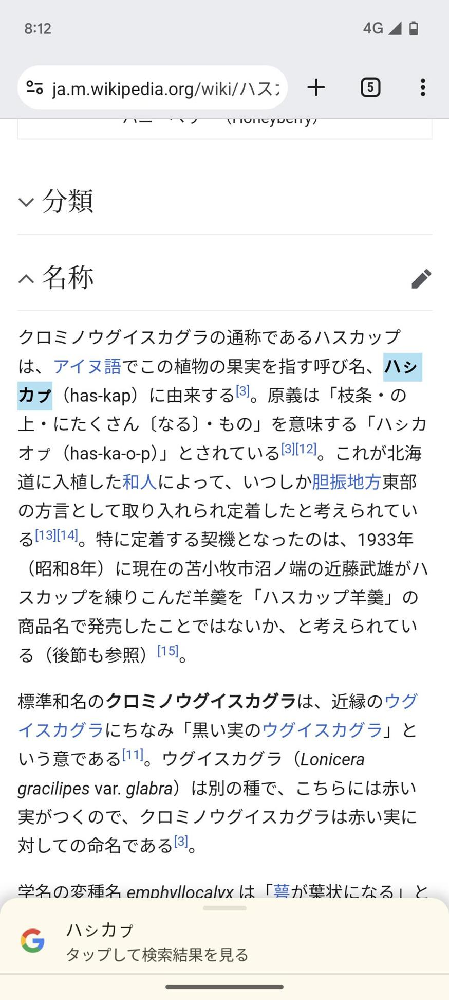
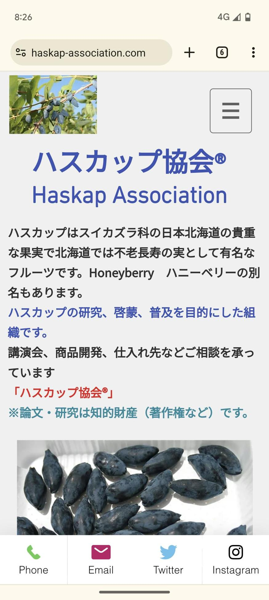
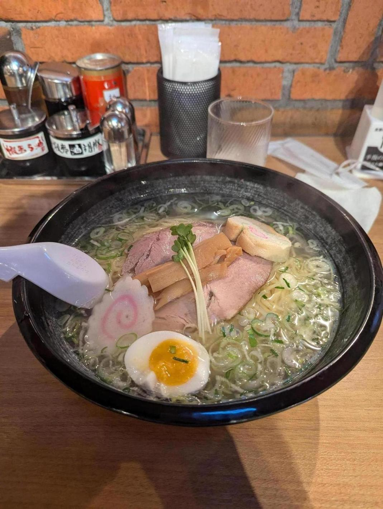

一昨日の日記にハスカップのスペルが表記ゆれしている画像を載せたが、あれについてなんとなく気になったので調べてみたところ、ハスカップという言葉はアイヌ語だった。
アイヌ語は当然英語ではなく、従って英語の正しいスペルというものが存在しない。じゃあアイヌ語ではどう書くんだろうと思ったが、アイヌ語にはかつて文字の概念がなく、今は「アイヌ仮名」という文字を使っているようだ。これはカタカナみたいなものらしい。
ハスカップのスペルちゃんと調べてから商品のパッケージ作ればいいのに、と思っていたが、ちゃんと調べてないのは私の方であった。こういう浅はかさを目の当たりにすると悲しい。間違っているのは自分のほうかもしれない、という考えができてないことがあるなと感じた。

まあでも、アルファベットで表記する場合は「Haskap」が正しいっぽいけどな。だったらそれで良さそう。

北海道から帰ってきた。空港であじさいのラーメン。味噌ラーメンよりも、醤油や塩のほうが好きだ。